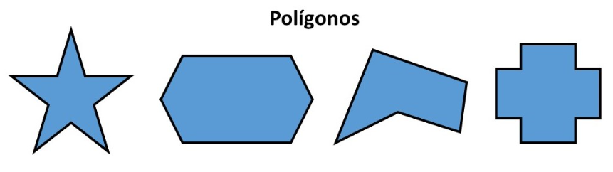
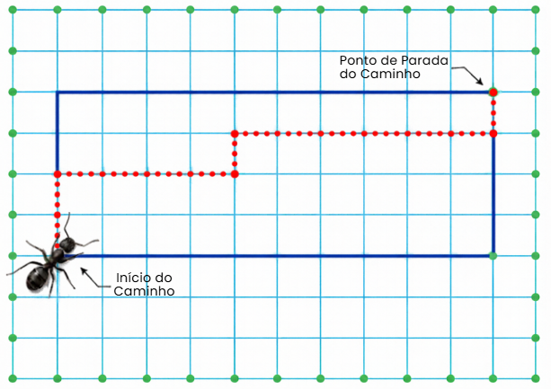

.png)
Missão 2 - Contornando Figuras
O que é Perímetro?
O perímetro é a soma de todos os lados de um polígono, ou seja, a medida do seu contorno. Como indica uma distância linear, suas principais unidades de medida são o metro (m), seus múltiplos (dam, hm, km) e submúltiplos (dm, cm, mm).
Nas imagens abaixo, podemos ver o perímetro destacado em preto.

💡 Você sabia?
Se uma formiga sair de um vértice ao oposto de um retângulo na malha quadriculada (movendo-se apenas para a direita ou para cima), ela percorrerá a metade do perímetro, conhecida como semiperímetro.

Veja só qual é o segredo!
Independentemente de qual zigue-zague a formiga escolha, seja subindo tudo logo no início ou alternando entre trechos horizontais e verticais, uma coisa mágica acontece: os trechos horizontais somados formam a largura do retângulo, enquanto os verticais formam a altura.
Veja o vídeo explicativo:
Agora é com você!
Preparado para o desafio?
Aceite esta missão relâmpago de raciocínio e agilidade sobre Perímetro no Wordwall.
Autor: Robson Leal
Plataforma online que permite criar atividades e jogos educativos interativos.